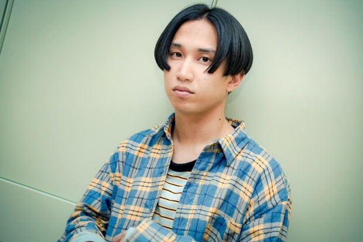
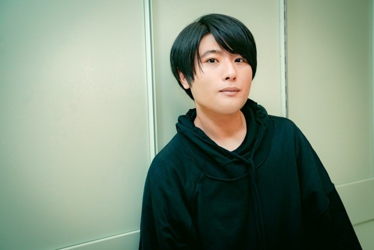
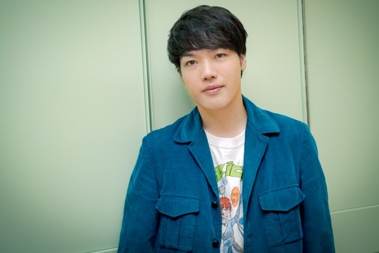
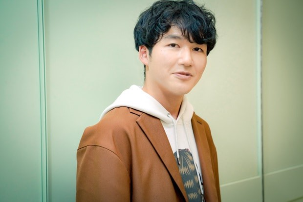

# mkrn1
      
  はっとり（1993年6月29日（27歳） - ） - ギター、ボーカル
  本名、河野 瑠之介（こうの りゅうのすけ）。バンドの中心人物で、大半の楽曲の作詞・曲を担当。
  <br>
  高校時代からの愛称「はっとり」を大学に入ってからも自称していたため、メンバーは「服部」という苗字であると思い込んでいたが、
  <br>学内にそのような人物はおらず、幻の生徒なのではないかと噂になり、本人に確認したところ、あだ名であることが判明した。「はっとり」はユニコーンのアルバム『服部』に由来する。
  本名は2015年2月の「音流」出演時に初めて明かした。番組では「瑠之助」と紹介されたが、「瑠之介」が正しい。
  高校生時代に所属していたバンド「MIGELL」には有泉慧（本日休演 / ベース）、河野大夢（Azami / ドラムス）、タナカタカヒロ (toah / ベース　MIGELLではギターを担当していたピアニスト) が所属していたことを、2019年5月18日に開催された「青春と一瞬 MV先行試写会＆ミニライブ」にて口にしている。
  <br>
  
  高野 賢也（たかの けんや、1993年7月16日（27歳） - ） - ベース
  通称は「けんけん」「ごしょ」など。アニメが好き過ぎてメンバーからは「アニメに関して検索するよりこいつに聞いた方が早い」と言われるほど。
  はっとりと共に作曲を行なっていたサティの脱退を機に作曲に関わるようになる。2017年リリースのアルバムで「イランイラン」の作曲を手掛けた[1]。
  <br>
  
  田辺 由明（たなべ よしあき、1989年5月30日（31歳） - ） - ギター
  通称は「よっちゃん」。ハードロックやヘヴィメタルが好き。
  フライングVタイプのギターを愛用し、俗に「泣き」と呼ばれているギターソロを弾くことが多い。メンバー最年長であり、アニキ的存在である。[2]サウナにハマり熱波師の勉強中。
  
  長谷川 大喜（はせがわ だいき、1993年11月19日（27歳） - ） - キーボード
  通称は「大ちゃん」。ジャズが好き。
  メンバー内唯一の電子オルガンコース出身（サティ含む他4人はロック＆ポップスコース出身）。[3]
  ギターの田辺と同じくサウナにハマり中。料理が得意でクックパッドにレシピを載せている。
 
  </p>
</div>
</div>
  <footer>
    <div class="container">
      <p>© macaroniempitsu All rights reserved.</p>
    </div>
  </footer>
  </body>

</html>
